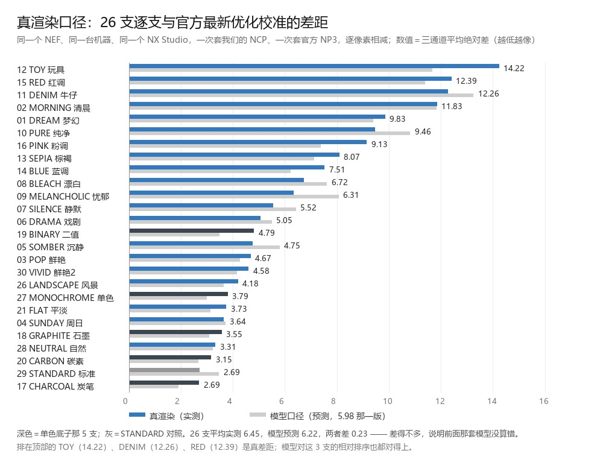
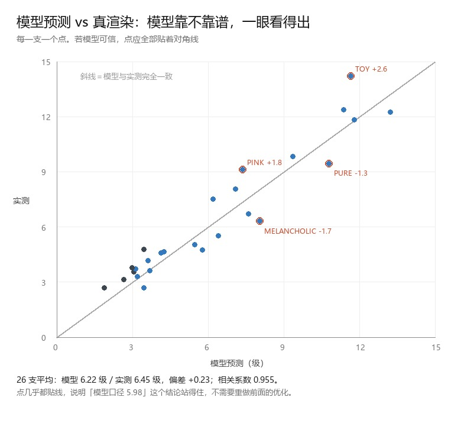
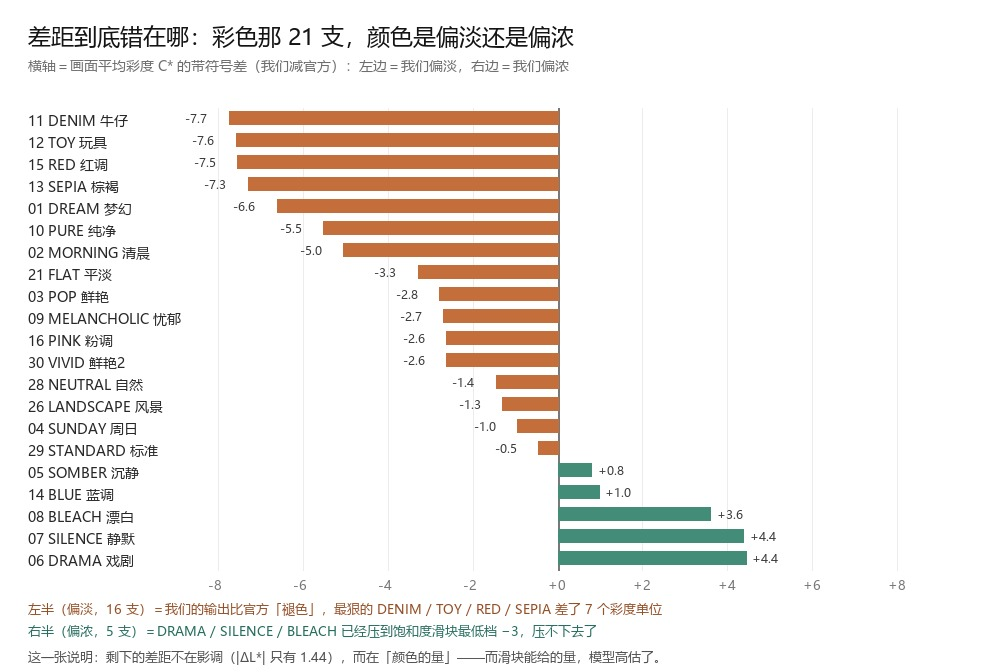
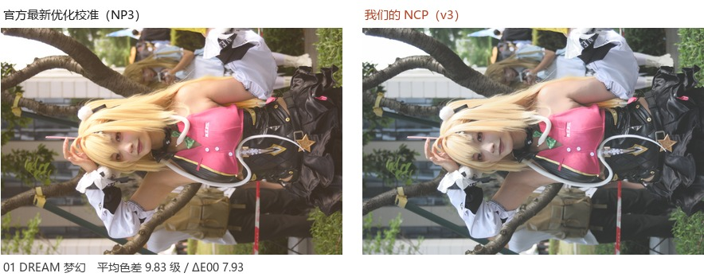
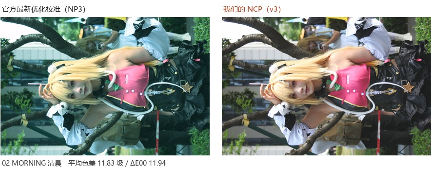
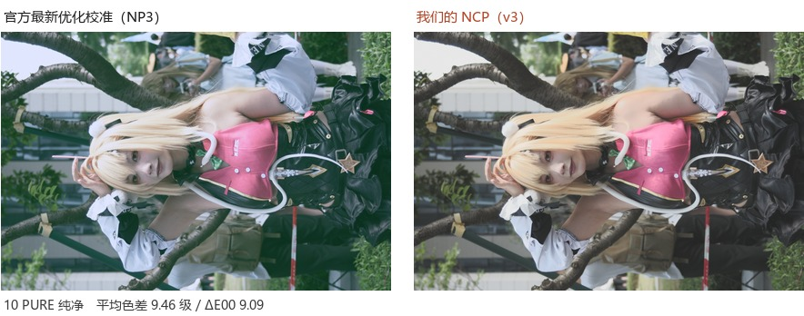
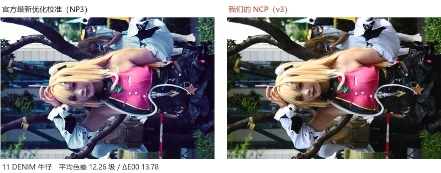
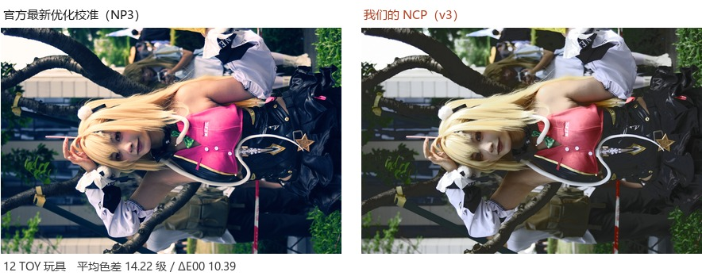
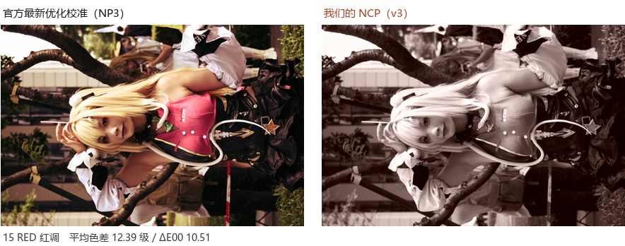

真渲染口径：我们的 NCP 与官方最新优化校准，差多少
同一个 NEF、同一台机器、同一个 NX Studio，一次套我们的 NCP 导出、 一次套官方 NP3 导出，然后逐像素相减。2026-11-01 实测，样本 DSC_4484.NEF，26 支。
拆开看：彩色 21 支平均 7.14 级，单色 5 支平均 3.59 级。单色支更接近，因为单色只走影调、没有颜色要追。
一、这个数为什么可信
前面所有报告里的「5.98 级」是模型口径：拿标准直出样片，套上文件里存的曲线和滑块， 算出预测图，再和官方样片比。那条链里藏着两个假设——机身直出等于预测函数、颜色只受一个 线性倍率影响。这次不用假设，直接拿 NX Studio 渲出来的真图相减。
把两个口径逐支对一遍：模型对这 26 支给的是 6.22 级，实测 6.45 级，偏差仅 +0.23 级，逐支相关系数 0.955。 也就是说——前面那套模型没有系统性算错，之前所有基于它的结论（v1 7.93 → v3 5.98、 「参数已经到头」）都站得住，不用推翻重做。
二、26 支逐支结果
| # | 滤镜 | 类型 | 平均差（级） | ΔE00 | 可辨像素 | |ΔL*| | |ΔC*| | 色相角 ΔH° |
|---|---|---|---|---|---|---|---|---|
| 12 | TOY 玩具 | 彩色 | 14.22 | 10.39 | 99.4% | 3.67 | 9.43 | 24.86 |
| 15 | RED 红调 | 彩色 | 12.39 | 10.51 | 97.1% | 1.59 | 12.46 | 23.65 |
| 11 | DENIM 牛仔 | 彩色 | 12.26 | 13.78 | 95.9% | 1.20 | 11.93 | 57.64 |
| 02 | MORNING 清晨 | 彩色 | 11.83 | 11.94 | 99.8% | 0.69 | 7.94 | 41.53 |
| 01 | DREAM 梦幻 | 彩色 | 9.83 | 7.93 | 99.9% | 1.08 | 7.66 | 13.87 |
| 10 | PURE 纯净 | 彩色 | 9.46 | 9.09 | 99.2% | 1.80 | 8.53 | 12.76 |
| 16 | PINK 粉调 | 彩色 | 9.13 | 8.32 | 95.0% | 1.20 | 6.46 | 34.31 |
| 13 | SEPIA 棕褐 | 彩色 | 8.07 | 7.04 | 96.1% | 1.22 | 7.92 | 0.00 |
| 14 | BLUE 蓝调 | 彩色 | 7.51 | 6.42 | 96.9% | 1.71 | 5.03 | 23.08 |
| 08 | BLEACH 漂白 | 彩色 | 6.72 | 6.57 | 91.8% | 1.46 | 5.51 | 14.41 |
| 09 | MELANCHOLIC 忧郁 | 彩色 | 6.31 | 6.95 | 95.8% | 1.05 | 4.91 | 17.65 |
| 07 | SILENCE 静默 | 彩色 | 5.52 | 3.83 | 54.4% | 1.23 | 4.43 | 3.96 |
| 06 | DRAMA 戏剧 | 彩色 | 5.05 | 4.02 | 57.5% | 1.60 | 4.46 | 13.38 |
| 19 | BINARY 二值 | 单色 | 4.79 | 7.75 | 52.5% | 9.77 | 0.10 | 0.00 |
| 05 | SOMBER 沉静 | 彩色 | 4.75 | 3.19 | 54.3% | 1.78 | 3.38 | 6.90 |
| 03 | POP 鲜艳 | 彩色 | 4.67 | 2.92 | 55.5% | 1.55 | 3.24 | 4.04 |
| 30 | VIVID 鲜艳 | 彩色 | 4.58 | 2.83 | 54.0% | 1.77 | 2.83 | 4.47 |
| 26 | LANDSCAPE 风景 | 彩色 | 4.18 | 2.42 | 44.6% | 1.54 | 2.05 | 4.77 |
| 27 | MONOCHROME 单色 | 单色 | 3.79 | 1.19 | 15.1% | 1.55 | 0.00 | 0.00 |
| 21 | FLAT 平淡 | 彩色 | 3.73 | 2.67 | 46.8% | 0.97 | 3.30 | 4.43 |
| 04 | SUNDAY 周日 | 彩色 | 3.64 | 2.06 | 34.4% | 1.13 | 1.65 | 3.78 |
| 18 | GRAPHITE 石墨 | 单色 | 3.55 | 1.56 | 22.2% | 1.92 | 0.23 | 0.00 |
| 28 | NEUTRAL 自然 | 彩色 | 3.31 | 2.11 | 38.2% | 1.08 | 1.93 | 4.86 |
| 20 | CARBON 碳素 | 单色 | 3.15 | 1.19 | 16.2% | 1.35 | 0.25 | 0.00 |
| 29 | STANDARD 标准 | 彩色 | 2.69 | 1.53 | 18.9% | 0.93 | 1.29 | 2.63 |
| 17 | CHARCOAL 炭笔 | 单色 | 2.69 | 1.08 | 5.9% | 1.14 | 0.29 | 0.00 |
4 支没进这张表：FLAT_MONOCHROME、DEEPTONE_MONOCHROME、RICH_TONE_PORTRAIT、 FLEXIBLE_COLOR。磁盘上没有这 4 支的 NP3 原始文件，NX Studio 1.7.1 的内置列表里也没有， 所以「官方最新」这一侧根本画不出来，无法构成对照。
三、逐支差距排序

四、模型 vs 实测

五、差距到底错在哪
把色差拆成亮度、彩度、色相三份，结论很清楚：影调已经基本对上，色差几乎全在「颜色的量」上。 彩色支 |ΔL*| 只有 1.44（人眼在这个量级基本看不出亮度差），而 |ΔC*| 是 5.54。

这个方向性很有意思：它不是「统一偏淡」或「统一偏浓」，而是各支各偏一个方向。
同一整套文件里，DENIM 该更浓、DRAMA 该更淡，而机身能给的只是一个全局倍率。
之前那次「7×7 整数档穷举、0 支值得改」就是在这个前提下做的——但那次用的是模型给的
每档增益；如果每档增益本身估错了，穷举的结论也得跟着重看。所以先在
_probe_slider/ 里放好了一组标定探针。
SAT_STEP = 1.13（饱和度每档 ×1.13）。
拿实测的彩度反推，NEUTRAL（−1 档）÷ STANDARD（0 档）= 0.946、POP（+2 档）÷ STANDARD
开平方 = 1.060，都指向「每档约 1.06 倍」，比模型小了将近一半。
不过这三支的曲线并不相同，彩度差里混着曲线的成分，这个数只能当量级参考——
要钉死它，得用同一条曲线、只改一个字节的一组探针，已经做好放在
_probe_slider/ 里等实测。六、六组并排实拍
左边官方、右边我们，同一张原片同一套导出设置。差距最大的 6 支：






七、边界说明
- 样本是 DSC_4484（横构图 cosplay 实拍），不是拟合时用的 DSC_3891。 换一张底片还能保持 0.955 的相关性，说明不是过拟合；但数字本身是针对这张片子测的。
- 26 支而非 30 支，原因见第二节注。
- 数值口径：420px 长边等比缩放后逐像素统计；平均差 = 三通道平均绝对差； 剪裁区（任一通道 <8 或 >247）不计入，因为那是机身截断，不是滤镜造成的。
- 侧拍的 JPEG 编码、锐化由 NX Studio 两边同等施加，因此不构成偏差来源； 但 NX Studio 会把我们写进文件的曲线控制点按自己的插值重算 LUT， 这一步的差异已包含在结果里。
八、复现
python d300/tools/real_gap.py --csv d300/samples/metrics_real.csv python d300/tools/chart_real_gap.py python d300/tools/make_real_pairs.py python d300/tools/report_real.py
原始测量数据：d300/samples/metrics_real.csv；
成片：d300/samples/real_v3/（我们）、d300/samples/real_target/（官方）。
两侧都是 4288×2848 全尺寸导出。